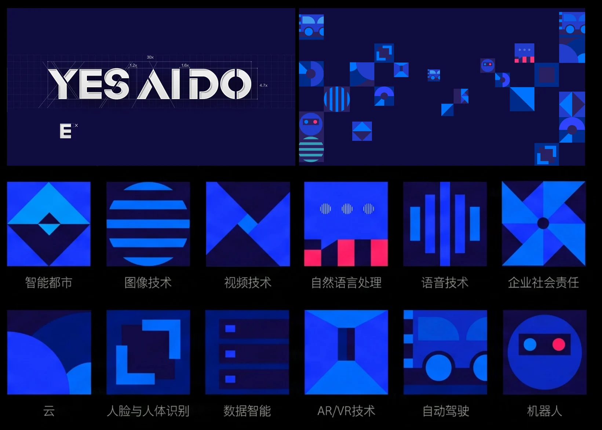
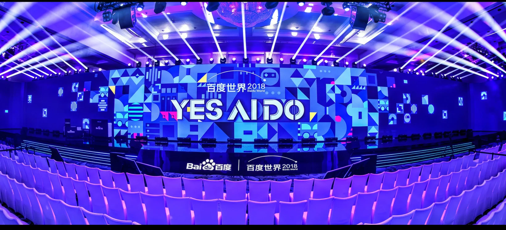
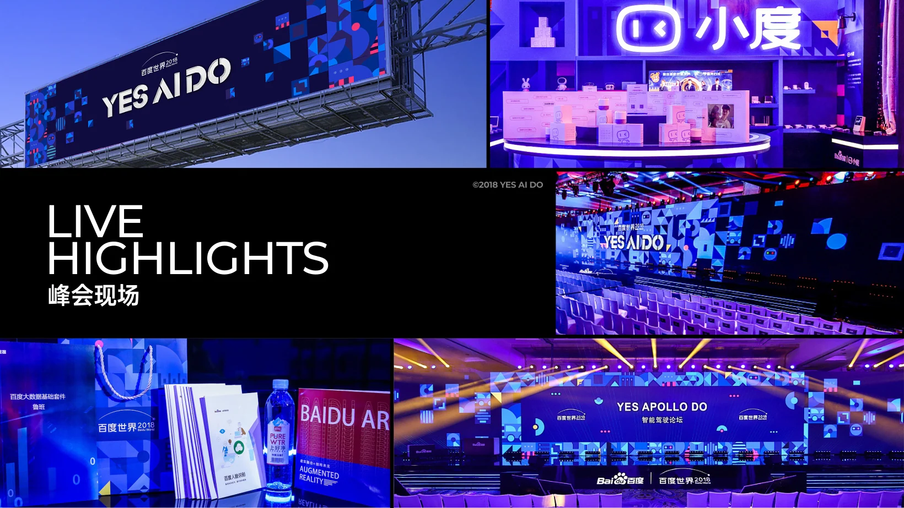

Step 03超级峰会与整合事件营销
2018 百度世界大会
「YES AI DO」超级科技峰会的创意及视觉统筹。一套主视觉系统同时用于千人主会场、分论坛、展区和大会物料。
- 我的职责
- 创意及视觉统筹
- 项目范围
- 主分论坛同步联动 · 全场景视觉落地
Visual Concept
主视觉构思
用一套几何图形表达 AI 生态
把抽象的 AI 技术能力组织成可以识别、拆分与组合的视觉模块。
- 定调 · 科技蓝配生活感跃色
- 在高纯度科技蓝中加入洋红等亮色，回应让 AI 从实验室走向日常场景的大会主题。
- 模块 · 12 项 AI 能力
- 将自动驾驶、语音、智能都市等能力转化为共享同一网格的几何图形。
- 组合 · YES AI DO
- 用模块拼贴呈现 AI 生态，以白色电路切口字形突出大会主张。


Main Stage
主会场
千人主会场的主视觉落地


Event Experience
峰会现场
从主会场延伸到分论坛与展区


Event Collateral
大会物料